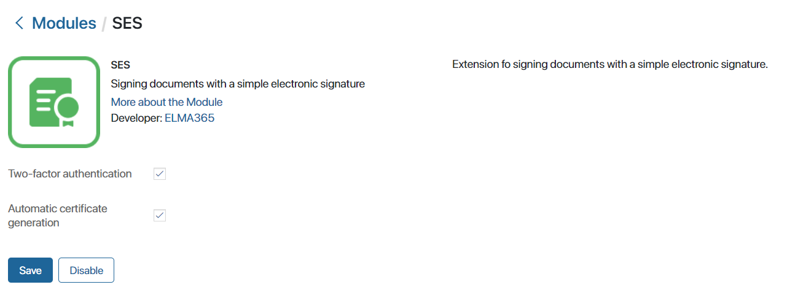
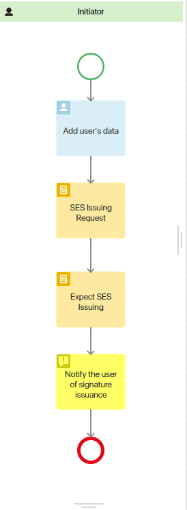

To sign app item properties, document files and approval decision with a simple electronic signature, the SES module is available in BRIX.
SES is a type of electronic signature that uses login and password, various codes, and SMS for signing. This type of signature is not suitable for signing legally significant documents.
Cloud certificates for a simple electronic signature that are valid for 12 months can be created inside the BRIX system in the following ways:
- Using the SES module by enabling the corresponding option in its settings. In this case, a custom certificate will be automatically generated for each user.
- In the course of the business process, using standard elements for issuing an advanced non-qualified e-signature: Signature Issuing Request and Expect Signature Issuing. In this case, certificates can be issued for specific users.
Enabling the module
- Go to the Administration > Modules workspace.
- Select the SES module.
- On the module page, click Enable and configure the settings:

- Two-factor authentication. Check this option so that during signing the user confirms the action with a one-time code sent by SMS or email.
Please note, that two-factor authentication must be configured in the company’s security settings for this option to work.
- Automatic certificate generation. Enable the option to issue simple electronic signature certificates for all system users.
- Click Save.
You can then use the SES provider to sign files and app items. For more information on how to set up and use the signature, see the Digital signature in apps article.
Issue SES certificate in the business process
After enabling the SES module, you will be able to issue simple electronic signature certificates to users during a business process. For this purpose, the same elements are used in the business process designer as for issuing an advanced non-qualified e-signature: Signature Issuing Request and Expect Signature Issuing.
The process of issuing an electronic signature certificate is configured in several steps. First, variables are added to the process context that will store information about the user requesting the simple electronic signature. Then an element for entering data about the user is placed on the schema: Task or Script.
Next, the Signature Issuing Request and Expect Signature Issuing activities are placed. In the settings of the activities, you can change their names for clarity, for example, to SES Issuing Request and Expect SES Issuing. Also, in the settings, you should map the fields to variables that store user data and specify the SES service that will be used to issue the certificate.
For example, the SES certificate issuance process schema may look as follows:

When the process reaches the SES Issuing Request activity, BRIX generates a request for issuing a simple electronic signature certificate. Then, while the user data is being processed in the system, the process stops at the Expect SES Issuing activity. Once the process is completed, the employee will be able to sign files and app items with the cloud-based SES certificate.
Found a typo? Select it and press Ctrl+Enter to send us feedback